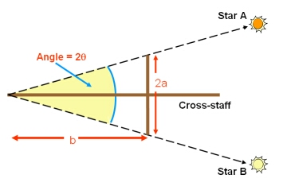
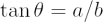
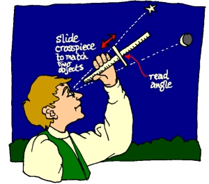

The cross-staff was an observing tool developed by Levi ben Gerson (1288-1344). It allowed a straightforward measurement of the angular separation of two celestial objects, or the angular diameter of a single object.
The smaller arm (length 2a in the figure on the right) is moved until it aligns with the two objects (stars A and B) at a distance b from the observer’s eye.
The angular separation (2θ) is then calculated using:


The angles could be marked on the longer arm of the cross-staff in advance, so that a quick reading of angular separation could be made.
It was also a valuable tool for navigation, as it allowed a simple determination of the observer’s latitude from an observation of the Sun. At noon, when the Sun is at its highest point in the sky, the Sun’s altitude could be measured with the cross-staff and then compared with a table of solar positions. The limitation of the cross-staff was the the observer had to look directly at the Sun, so it was a tool that was better suited for determining stellar positions.
The cross-staff could be used for measuring both horizontal and vertical angles, unlike the instrument that would replace it: the quadrant.